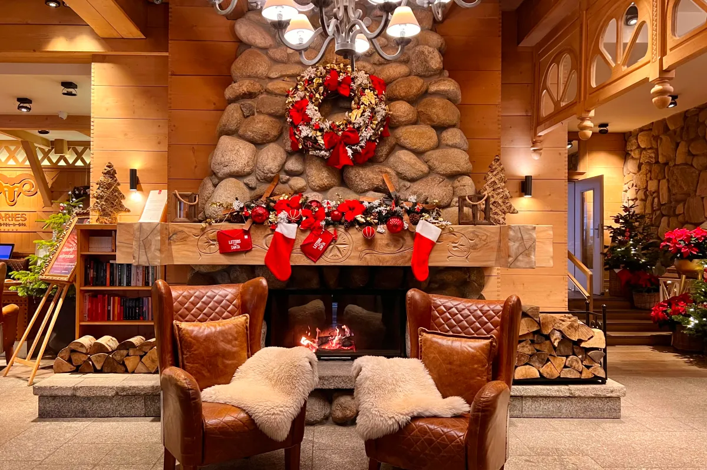

Tradycje Bożonarodzeniowe
Boże Narodzenie to jedno z najbardziej uroczystych i rodzinnych świąt w Polsce. Obchody rozpoczynają się Wigilią, która jest wyjątkowym dniem pełnym tradycji. W czasie wieczornej kolacji wigilijnej, na stole znajduje się 12 potraw, symbolizujących 12 apostołów. Przed rozpoczęciem posiłku wszyscy dzielą się opłatkiem, składając sobie życzenia.
Podczas Wigilii tradycyjnie śpiewa się kolędy i oczekuje na pierwszą gwiazdkę, symbolizującą gwiazdę betlejemską. Po kolacji dzieci szukają prezentów pod choinką, które – według zwyczajów – przynosi Święty Mikołaj. Późnym wieczorem wiele osób uczestniczy w Pasterce, uroczystej mszy odprawianej o północy.
Dni świąteczne, 25 i 26 grudnia, to czas spędzany w gronie rodziny. Śpiewa się kolędy, odwiedza bliskich oraz spożywa tradycyjne potrawy, takie jak pierogi, barszcz z uszkami, karp czy makowiec. Świąteczna atmosfera, pięknie udekorowane domy i zapach pierników sprawiają, że Boże Narodzenie jest szczególnie magiczne.
